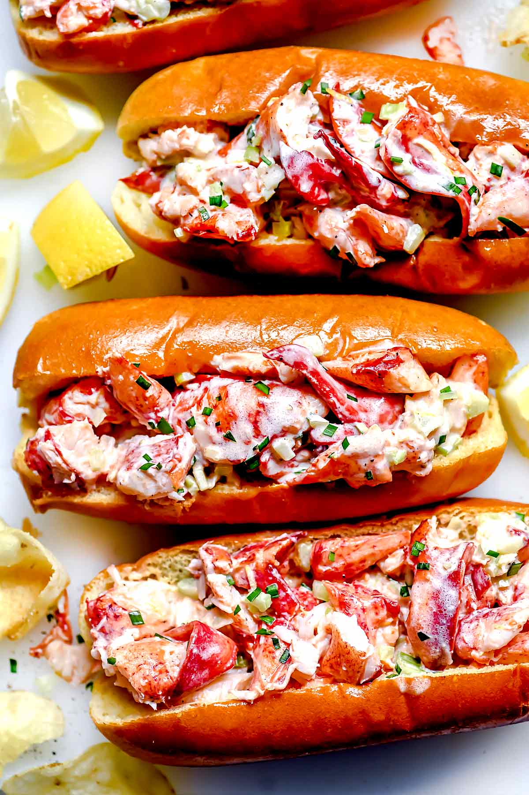

Home
Lobster Rolls

The BEST Butter and Mayo Lobster Rolls
In the great debate of whether lobster rolls are best when served Connecticut-style with melted butter or the Maine way laced with lemony mayonnaise, I say do a combo of both! Trust me, you're going to love these.
Ingredients
- 1 pound frozen lobster meat , thawed, or cooked meat from two 1 ½ - 2 pound live lobsters
- ¼ cup minced celery
- ¼ cup mayonnaise
- 1 tablespoon minced chives
- 1 tablespoon lemon juice
- 1 teaspoon lemon zest
- ¼ teaspoon kosher salt
- 4 split-top brioche, New England style hot dog buns , with sides trimmed off
- ¼ teaspoon freshly ground black pepper
- 4 tablespoons butter , divided
Steps
- Rinse the lobster meat and pick through for any loose shells. Drain throughly so the mayo sauce doesn't get watery. Chop or tear into large chunks and set aside.
- In a large bowl, mix the celery, mayonnaise, chives, lemon juice, lemon zest, kosher salt and ground black pepper. Taste for seasoning.
- In a large skillet over medium heat, melt 2 tablespoons of the butter and add the lobster meat. Cook, stirring for 2 minutes until warmed through and buttery all over. Use a slotted spoon to dish the lobster meat into the mayonnaise mixture and toss to coat. Discard butter and juice released from the lobster and wipe out the skillet. Melt the remaining butter in the skillet over medium heat; toast the buns on the cut sides about 2 minutes each side until golden and toasty.
- Load each bun equally with lobster meat and garnish with more chives if desired. Serve with potato chips.